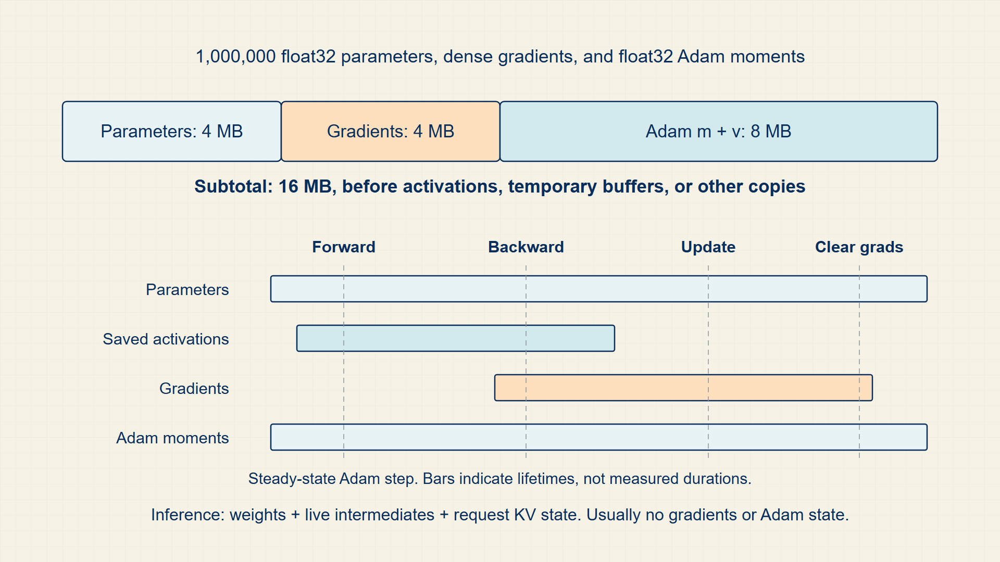
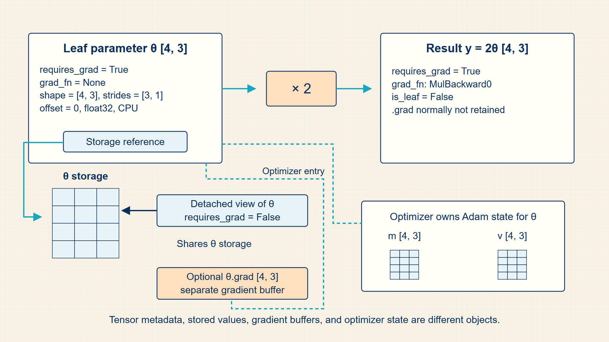

23 Tensor storage: Shapes, views, devices, and lifetime
Two tensors can describe the same mathematical array while sharing storage differently or requiring different copies. Shape alone cannot reveal that difference. Layout, numerical type, device, and retained gradient state determine which values are stored and which operations can execute.
23.1 Logical elements and underlying storage
A repeated row can appear twice in an array without its values being stored twice. Conversely, a small slice can keep a much larger allocation alive. Memory accounting therefore needs both the logical shape and the underlying storage.
The tensor primer in Roadmap established arrays and axis meanings. A tensor’s dtype specifies the numerical type of its elements. Its device identifies the memory and execution location, such as CPU or a CUDA GPU. Shape gives the length of every logical axis.
For axis lengths \(d_i\), the logical element count is
\[ \operatorname{numel}(X)=\prod_i d_i \tag{23.1}\]
Each combination of valid indices identifies one logical entry. A scalar tensor has shape [] and one element. An axis of length zero makes the total zero. Counting entries does not establish how many distinct storage locations they reference.
The logical dense payload is
\[ \mathrm{logical\ payload}(X)=\operatorname{numel}(X)\cdot\mathrm{bytes\ per\ element} \tag{23.2}\]
For fixed dtype, each logical value has the same element size. This product equals value storage for a separate dense allocation with no extra capacity. It is not necessarily a view’s underlying allocation or the allocator’s reserved memory.
Example: Independent values and expanded rows
A separately allocated contiguous tensor with shape \([2,3,4]\) has \(2(3)(4)=24\) values. With float32, its value payload is \(24(4)=96\) bytes, excluding overhead.
In a separate example, three float32 values occupy 12 bytes. Expanding their row from [1,3] to [2,3] can produce six logical entries sharing those same three values. Its logical payload is 24 bytes, but its underlying value storage is still 12 bytes.
Conclusion: Logical count and distinct stored values answer different questions. Summing the logical sizes of several views can count the same allocation repeatedly.
The runnable example explicitly chooses float32 for a random [4,8,16] tensor and leaves it on the default CPU device.
Code example: PyTorch tensors carry dimensions, dtype, and device metadata.
import torch
x = torch.randn(4, 8, 16, dtype=torch.float32)
print(x.shape) # batch=4, sequence=8, hidden=16
print(x.dtype) # float32
print(x.device) # cpu unless moved to cudaIt prints shape [4,8,16], dtype torch.float32, and device cpu. There are 512 logical elements, or 2048 payload bytes for this independent allocation. No gradient tracking is requested. The random values do not affect these counts. Section 23.3 adds the layout information needed to identify sharing.
torch.arange and torch.linspace construct sequences, while zeros and ones set every value. An allocation without initialization must be filled before its values are used. Existing memory contents are not random samples. A seeded random generator is a separate operation whose distribution and seed define its sampling behavior.
A dtype such as torch.float32 describes tensor storage. It is not a Python class for constructing individual numeric objects. A zero-dimensional indexed tensor still has tensor metadata. Its .item() method returns the corresponding Python scalar, which can incur synchronization when the value resides on a device.
The axes also determine whether an operation combines the intended values. A dimensionally legal broadcast can still compare the wrong examples.
23.2 Matrix contraction and trailing-axis broadcasting
Applying one bias vector to many rows should reuse its class coordinates without mixing examples. Matrix multiplication and broadcasting provide different rules for that batched computation.
For row-batch input \(X\), the affine map is
\[ X\in\mathbb{R}^{B\times D_{\mathrm{in}}},\quad W\in\mathbb{R}^{D_{\mathrm{in}}\times D_{\mathrm{out}}},\quad Y=XW+b\in\mathbb{R}^{B\times D_{\mathrm{out}}} \tag{23.3}\]
The shared input-feature axis has length \(D_{\mathrm{in}}\). Matrix multiplication sums over it, leaving batch size \(B\) and output width \(D_{\mathrm{out}}\). Thus a two-by-three matrix times a three-by-four matrix gives a two-by-four matrix.
Section 5.3 establishes the orientation convention: mathematical \(W\) has shape \([D_{\mathrm{in}},D_{\mathrm{out}}]\), while nn.Linear stores its transpose with shape \([D_{\mathrm{out}},D_{\mathrm{in}}]\). These are two conventions for the same map, not an instruction to transpose an already compatible mathematical matrix.
Broadcasting, introduced for biases in §4.3, aligns axes from the right. Two aligned lengths are compatible when they agree or one equals one. A missing leading axis acts as length one. A size-one axis takes the other length, while equal lengths stay unchanged. A length-one input reuses its value along that result axis.1
For a score array [[1,2,3],[4,5,6]] and bias [10,20,30], shapes [2,3] and [3] align as [2,3] and [1,3]. Their sum is [[11,22,33],[14,25,36]]. A bias of shape [2] would fail because the trailing lengths three and two disagree.
A column shape [2,1] is also compatible with [2,3]. It adds one value per row across three columns. This is a different meaning from adding a length-three feature bias, despite both results having shape [2,3].
Example: A legal broadcast comparing the wrong pairs
Predictions [[0.8],[0.2]] have shape [2,1], while labels [1,0] have shape [2]. Subtraction aligns them as [2,1] and [1,2], producing shape [2,2]:
[[-0.2,0.8],[-0.8,0.2]].
Each prediction has been compared with both labels. Pairwise errors would be [-0.2,0.2], using two matching [2] arrays, or the equivalent two [2,1] arrays.
Conclusion: Broadcasting succeeded but changed the comparison from two aligned pairs to four cross-pairs. Matching the target and prediction contracts prevents a silent objective change.
An expanded view can reuse storage with a zero stride. An arithmetic result such as the sum above normally needs its own values. Vectorization can remove Python loops while still allocating a large intermediate, so it does not make every expression cheaper.
The axes must retain their meanings after reshaping. In the equal-width attention setup, heads times head width equals model width. §17.2 explains why splitting features and permuting axes are separate operations.
23.3 Strides, offsets, aliases, and copies
A transpose can change which values are neighbors in logical reading order without moving them in memory. A view shares storage while describing its own shape, strides, and starting offset. A copy has separately allocated storage containing copied values. Shared-storage tensors are aliases, so changing one can change what another reads.
A storage stride is the number of storage elements traversed when one logical index increases by one. The storage offset is the index of the tensor’s first logical element relative to the storage start. For two axes,
\[ \operatorname{offset}(i,j)=o+i s_0+j s_1 \tag{23.4}\]
Here \(o\) is the storage offset, and \(s_0,s_1\) are strides. The offset and strides count elements. Multiplying the resulting offset by bytes per element gives a byte displacement from the storage start.
With strides [3,1], storage offset zero, and coordinate (1,2), the element offset is \(0+1(3)+2(1)=5\). For float32, this is 20 bytes from the storage start.
Now let base contain 0 through 11 in shape [4,3]. The slice base[1:3] has shape [2,3], strides [3,1], and storage offset 3. Its coordinate (1,2) reaches element \(3+3+2=8\), or 32 bytes from the underlying start. Adding only the strides would incorrectly select element 5.
For an independent x=[[0,1,2],[3,4,5]], transposition gives shape [3,2] and strides [1,3]. Its coordinate (2,1) still reaches element 5. Assigning x.T[0,1]=30 changes x[1,0] to 30 because both refer to the same location.
view requires a new shape compatible with the existing strides. It need not require every input to be contiguous. reshape and flatten may return a view or allocate a copy, depending on layout. Their names alone do not guarantee sharing.2
A contiguous tensor has the layout required by the specified memory format. In the ordinary row-major format, the last axis changes fastest. contiguous() returns the existing tensor when it already satisfies that format. Otherwise it copies into compatible storage. Copying x.T therefore separates future mutations, at the cost of allocation and copying. Contiguity alone does not prove a later kernel runs faster.
detach() removes the tensor’s connection to its earlier autograd history while sharing storage. It is not an independent data copy. Changing the detached values also changes the original storage, and can invalidate saved values needed for backward. detach().clone() creates independent values when both separation of history and storage are required.3
For a compatible CPU NumPy array, torch.from_numpy preserves its dtype and shares its storage. A typical random NumPy array uses float64, so this conversion does not silently make it float32. Constructing torch.tensor(array, dtype=torch.float32) instead creates a copy in the requested type. A compatible .numpy() conversion can share storage in the other direction. A CUDA tensor first needs a host transfer for ordinary NumPy access.
An in-place operation, commonly marked by a trailing underscore such as add_, changes existing values. Its out-of-place counterpart returns a separate result. Boolean comparisons such as a > 10 produce Boolean values. An in-place comparison such as a.gt_(10) instead writes zero or one into the original tensor’s dtype. Aliases observe those changed values, so the distinction affects both correctness and storage.
A call to .to(device) can return the original tensor if device and dtype already match. Changing device requires a transfer. The nonscalar input and weight operands of the matrix operation in §23.5 must have compatible placement. Checking only the input’s device leaves the weight’s location unresolved.
23.4 Tensor roles and state lifetime
A training step can keep several arrays with the same shape alive for different reasons. Releasing one does not release all the others. Their roles determine when they are created, retained, and reused.
Parameters persist across steps, including frozen parameters whose values remain unchanged during updates. An activation is an intermediate value produced by the forward calculation. Autograd retains the values required by its backward rules while the graph needs them. A vocabulary embedding table is a parameter, while its looked-up vectors are activations. A torch.nn.Module registers parameters and child layers so their state can be discovered, moved, saved, and updated together. Defining a module does not fit its parameters.
A gradient buffer accumulates derivatives for a parameter. When present, its shape matches that parameter:
\[ \operatorname{shape}(G_{\theta})=\operatorname{shape}(\theta) \tag{23.5}\]
For a linear weight of shape [4,3], .grad therefore also has shape [4,3]. Before backward, or when the parameter has no contributing path, the buffer can be absent. Non-leaf gradients propagate without necessarily being retained in .grad, as §11.4 explains.
The optimizer state introduced with Adam contains persistent information used by an update rule. The following calculation counts the memory used by its first and second moments for each participating parameter:
\[ \operatorname{state}_{\mathrm{Adam}}(\theta)=\{m_{\theta},v_{\theta}\},\quad\operatorname{shape}(m_{\theta})=\operatorname{shape}(v_{\theta})=\operatorname{shape}(\theta) \tag{23.6}\]
Here \(m_\theta\) and \(v_\theta\) have the parameter’s shape. Adam also keeps an update counter for bias correction. The arrays’ numerical type is part of the memory calculation. These arrays belong to the optimizer’s state mapping, not to every tensor’s metadata.
optimizer.step() changes parameters but does not automatically clear .grad. Resetting gradients leaves Adam moments available for later steps. An ordinary backward can release saved graph data that it no longer needs. Keeping references or retaining the graph can extend those lifetimes.

The illustration groups persistent, forward, training, and serving objects but connects them as though they were successive stages. Their lifetimes can overlap. An embedding table is already part of parameter storage and must not be counted again as an independent category. Tokenizer vocabulary also need not reside on a GPU.
Example: Four arrays for one million parameters
One million float32 parameter values use 4,000,000 bytes, or 4 decimal MB. A same-type gradient adds 4 MB. Two same-type Adam moments add 8 MB, giving 16 MB for these four arrays.
This is 16,000,000 bytes, about 0.01490 GiB, using \(2^{30}\) bytes per GiB. Saved activations, other optimizer scalars, optional master parameter copies, temporary buffers, and allocation overhead are excluded.
Conclusion: Two moment arrays alone occupy twice the parameter payload under these assumptions. The 16 MB sum is not the complete training peak.
Calling model.eval() changes behavior of layers such as dropout. It does not disable autograd, erase existing gradients, or free an optimizer. With trainable inputs or parameters, a forward call in evaluation mode can still record a graph. torch.no_grad() disables recording within its scope. Inference mode additionally removes tracking overhead under stricter reuse constraints.4
For example, a linear layer in evaluation mode still gives an output with requires_grad=True when its parameters require gradients. Running that call inside torch.no_grad() gives an output without that recorded graph. The weight values and any existing optimizer state remain separate from this recording choice.
Ordinary inference needs parameters and temporary forward values. Autoregressive serving also retains the KV state from Chapter 21 for the request or a compatible cached prefix. Training gradients and moments can be absent in a dedicated inference process. They do not disappear merely because a training process switches to evaluation mode.
23.5 Compatible devices and optional distributed execution
A CPU model cannot multiply its weights with a nonscalar batch moved alone to a GPU. Both operands need compatible placement. A CUDA device is a supported GPU memory and execution target selected by PyTorch, such as cuda:0.
The runnable example selects CUDA when available and otherwise CPU. It moves both the layer and its input to that device, then checks the output placement.
Code example: Moving a model and its batch to one device
import torch
import torch.nn as nn
# The same code runs on a GPU when CUDA is available and on CPU otherwise.
device = torch.device("cuda" if torch.cuda.is_available() else "cpu")
model = nn.Linear(3, 2).to(device)
features = torch.tensor([[1.0, 0.0, -1.0]], device=device)
logits = model(features)
assert logits.device == features.device == next(model.parameters()).device
print(device, logits.shape)The output shape is [1,2]. Random layer weights make its values variable. A CPU fallback verifies this placement logic. It is not a GPU execution or performance result. Even on a GPU, a successful device assertion supplies no timing evidence.
Floating-point kernels can change rounding through operation order and numerical formats. Moving a calculation aims to preserve its mathematical function, not necessarily every output bit. Validation needs appropriate tolerances and task checks.
Data parallelism uses model replicas to process different data portions, then combines their gradients before consistent updates. An all-reduce operation aggregates arrays across the participating devices and returns the aggregate to each replica.5
If two devices each compute a mean over four equally weighted examples, averaging their gradients gives the combined eight-example mean. If their included counts are two and six, their means need weights \(2/8\) and \(6/8\). Equal averaging would give the smaller group too much influence. Masked-token objectives require the same count-aware treatment.
The global batch can stay fixed while its portions shrink across more devices. It grows only if the chosen local batches and device count imply growth. Communication, synchronization, and small local work can offset any computation savings. Greater throughput requires measurement rather than following from the device count.
Mixed precision uses different floating-point formats for different operations or stored state. Supported low-precision matrix operations can reduce traffic or use specialized hardware. Sensitive reductions and optimizer state may retain higher precision. The exact choices must be recorded.6
Loss scaling can enlarge small gradients during backward to reduce underflow in some formats. Unscaling must precede clipping or a comparison with ordinary gradients. An overflow policy may skip an update. These are real state changes, not merely a storage conversion. Loss, gradient, and held-out behavior need checks under the selected precision.
A GPU timing comparison additionally needs warmup, a declared timed region, and synchronization around asynchronous device work. Host transfers must be consistently included or excluded. Device, driver, library versions, tensor sizes, and repetitions belong with the timing.
23.6 Following shared storage into a differentiated result
A storage copy can preserve a gradient path, while a detached tensor can still share values. Following a transpose, a copy, and a detachment into one derivative distinguishes those properties. Let x contain [[0,1,2],[3,4,5]] on CPU in float32, with gradients enabled as a leaf.
It has shape [2,3], stride [3,1], storage offset zero, and grad_fn=None. The transpose t=x.T has shape [3,2] and stride [1,3]. It shares the same six values. Its grad_fn is PermuteBackward0, the autograd record created by this axis permutation.
Calling c=t.contiguous() copies those values into row-major [3,2] storage with stride [2,1]. It remains connected to the original leaf through the copy operation. Its independent storage does not imply independent gradient history.

The figure lists values, dimensions, device, dtype, and gradient information. It omits stride and offset, while optimizer state is a separate object. The trace supplies the missing storage facts rather than treating the picture as a complete memory layout.
The two-axis rule in §23.3 gives the view’s element offset from the start of its underlying storage. Here \(o=0\) and the transpose’s strides are [1,3]. Every term counts storage elements. If \(p_0\) is the underlying storage’s byte address and \(s\) the element size, the byte address is \(p_0+s\,\operatorname{offset}(i,j)\). A pointer already at the view’s first element must not add its storage offset again.
For a separate matrix product, §23.2’s contraction rule maps \([B,F]\) times \([F,D_{\mathrm{out}}]\) to \([B,D_{\mathrm{out}}]\). A changed stride does not change this mathematical shape rule. A compatible kernel can multiply a noncontiguous tensor correctly. Whether it copies internally or runs faster with contiguous input depends on the implementation and workload.
The runnable trace creates the specified leaf directly, checks sharing and copying, then differentiates the copied tensor’s squared sum. It also makes a detached alias without mutating it.
Code example: A shared transpose, independent copy, detached alias, and leaf gradient
import torch
x = torch.tensor([[0., 1., 2.], [3., 4., 5.]], requires_grad=True)
t = x.T
c = t.contiguous()
alias = x.detach()
assert t.untyped_storage().data_ptr() == x.untyped_storage().data_ptr()
assert c.untyped_storage().data_ptr() != x.untyped_storage().data_ptr()
assert alias.untyped_storage().data_ptr() == x.untyped_storage().data_ptr()
assert not alias.requires_grad
for name, value in [("x", x), ("t", t), ("c", c)]:
print(name, value.shape, value.stride(), value.storage_offset(),
value.requires_grad, type(value.grad_fn).__name__)
loss = c.square().sum()
loss.backward()
assert torch.allclose(x.grad, 2 * x.detach())
print(loss.item(), x.grad)The loss is \(0^2+1^2+2^2+3^2+4^2+5^2=55\). Backward gives x.grad=[[0,2,4],[6,8,10]]. It reaches the original coordinates through the copy and transpose. The detached alias shares storage but has no tracked history.
Conclusion: Layout, storage sharing, and differentiation are independent properties. The copy changes storage without cutting the gradient path. Detachment cuts that path without copying values. Chapter 24 adds the dataset and held-out evidence needed beyond these local checks.
Chapter checkpoint
Does [2,3] always require six distinct stored values? Does eval() clear Adam state? Does a legal broadcast guarantee the intended target pairing?
Answer: An expanded view can reuse three stored values for six logical positions. Evaluation mode changes layer behavior but neither disables gradients nor clears optimizer state. Broadcasting [B,1] against [B] can form [B,B], so pairwise target alignment requires its own shape check.
PyTorch Contributors. (2026). Broadcasting semantics. PyTorch 2.12 documentation.↩︎
PyTorch Contributors. (2026). Tensor views and Tensor.detach. PyTorch 2.12 documentation.↩︎
PyTorch Contributors. (2026). Tensor views and Tensor.detach. PyTorch 2.12 documentation.↩︎
PyTorch Contributors. (2026). Autograd mechanics: Evaluation mode. PyTorch 2.12 documentation.↩︎
PyTorch Contributors. (2026). DistributedDataParallel. PyTorch 2.12 documentation. The example explains weighting needed for a combined mean, not a complete distributed program.↩︎
PyTorch Contributors. (2026). Automatic mixed precision examples. PyTorch 2.12 documentation.↩︎